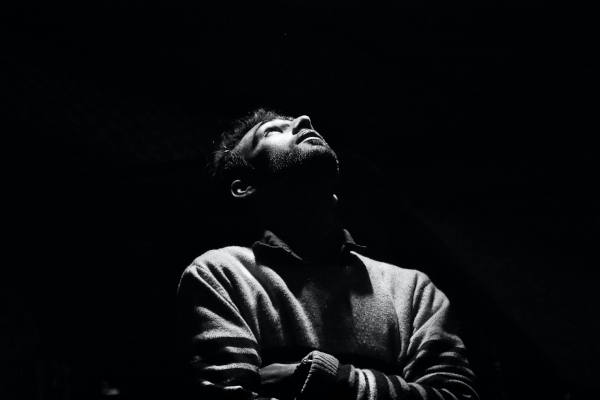
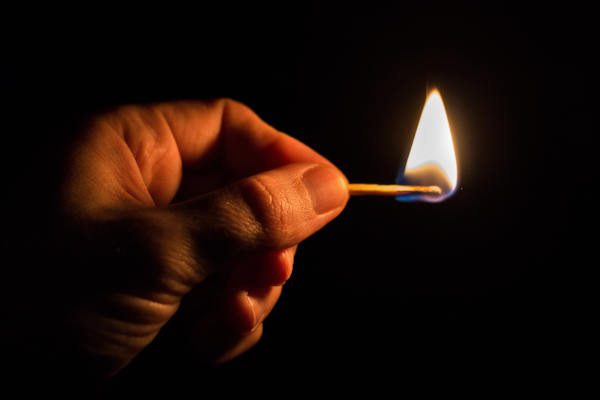

Trevas e aprimoramento dos sentidos
Percebe-se que em nosso mundo moderno, há sempre a prerrogativa no meio universitário clínico de psicologia, de que temos de fugir de nossos problemas, fugir de nossos medos, em suma de tudo que nos cause algum mal, não é mais permitido enfrentar as trevas de frente, é apenas permitido fingir que ela não existe, usar como meios de escape vários remédios, ou uma série que você gosta, tanto faz, no mínimo é algo que te distrairá de que essas trevas realmente existem.
O que são essas trevas?
A questão de trevas pode ser interpretado de várias formas, primeiro como perca da visão, e segundo como dificuldades e desorientação. Primeiro perca da visão pois na falta da luz há uma desorientação, você não enxerga realmente o que está na sua frente, nem ao seu redor, você está perdido, e é necessário agora prestar atenção e utilizar dos seus outros sentidos para fugir daquele problema, e essa escuridão faz bem, mas é necessário querer entrar dentro dela, colocar-se naquela situação. Levando tudo isso que eu disse até agora, darei alguns exemplos do que pode ser a escuridão na sua vida:
-Suspeita de uma traição.
ali são trevas, onde você tem que se arriscar a entrar, você deve as vezes até mesmo ficar de olho na sua mulher, amigos e ou familiares, para descobrir se algum deles estão sendo realmente infiéis a ti. E isso te deixará por um certo tempo desorientado e confuso, mas se você parar para sentir o cheiro e ouvir com atenção, certamente chegará até o interruptor e ligará de novo a luz.
-Desorientação interna.
Não é segredo para ninguém, que em nosso ciclo de vida, passamos na maioria das vezes por vários problemas de desorientação moral e em outros aspectos, e isto geralmente acontece quando você está distraído, não está percebendo as trevas em você, mas uma hora ela chegará a um ponto quase impossível de ignorar, e ali você terá de fechar-se no seu quatro e começar a penetrar as trevas que há em seu eu interior, aquilo o causará medo e desconforto, mas é só procurar o interruptor com paciência e sentidos atentos.
Faça a ti mesmo o favor e abrace as suas trevas, elas não estão lá para que você tenha medo, e sim que encontre a luz.